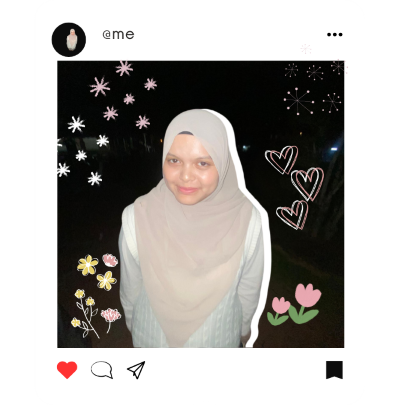

|  |
Who Am I?On 16 February 2003, a baby girl was born. |
||||||||||||||||||
✧₊⁺ Moodboard ✧₊⁺ |
✧₊⁺ Introduction Video ✧₊⁺ |
||||||||||||||||||
✧₊⁺ Biodata ✧₊⁺
|
Frequently Asked QuestionsDoes your name 'Putri' has anything related to the royalties?No, it does not. But I sure do wish it does! All my siblings have 'Putri' in their names. So you have sisters! How many?I have two younger sisters so that makes me the eldest. We're all girls. You can know more about my family here. What highschool did you go to?I went to SM Sains Hulu Selangor, also known as SEMASHUR! It's a great place. What is your favourite food?I like all kind of foods! My most favourite are Malay and Chinese cuisines. Take me out to eat mee tarik and I'll be your friend forever. How about favourite drink?Does ais kosong counts..? If not, then bubble milk tea! What is your MBTI?I used to be an INTJ-t, but recent years it changed to INFJ-t. I went from a serious strategist to an emotional dreamer. How so?I'm not sure. It's not that different, but I guess I'm just trying to learn to take things slowly. I still like to strategise and make plans for the future, and I also love to dream! I think using logic, but I also want to be more frank with my feelings. What are your dreams?I want to be a linguist. Or a literature translator. I like languages! At the same time, I also want to be a librarian? Maybe I could be a librarian specializing in linguistics? Who knows what the future holds! |
||||||||||||||||||
✧₊⁺ Interests ✧₊⁺
|